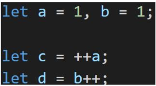

4.6. แบบฝึกหัด การดำเนินการเบื้องต้น
- ให้ระบุค่าของ a, b, c และ d หลังจากจบ statements ทั้งสามบรรทัด

a=2, b=2, c=2, d=1
- จงหาผลลัพธ์ของ Statement ต่อไปนี้
- "" + 1 + 0 //
- "" - 1 + 0 //
- true + false //
- 6 / "3" //
- "2" * "3" //
- 4 + 5 + "px" //
- "$" + 4 + 5 //
- "4" - 2 //
- "4px" - 2 //
- 7 / 0 //
- " -9 " + 5 //
- " -9 " - 5 //
- null + 1 //
- undefined + 1 //
- " \t \n" - 2 //